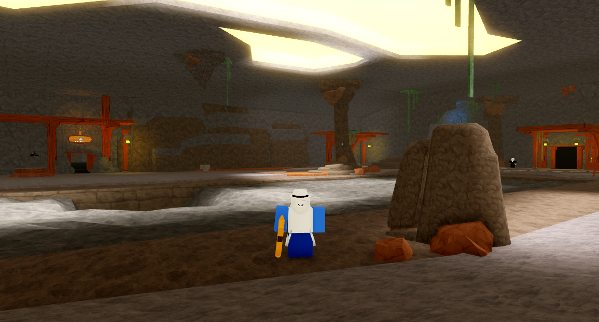
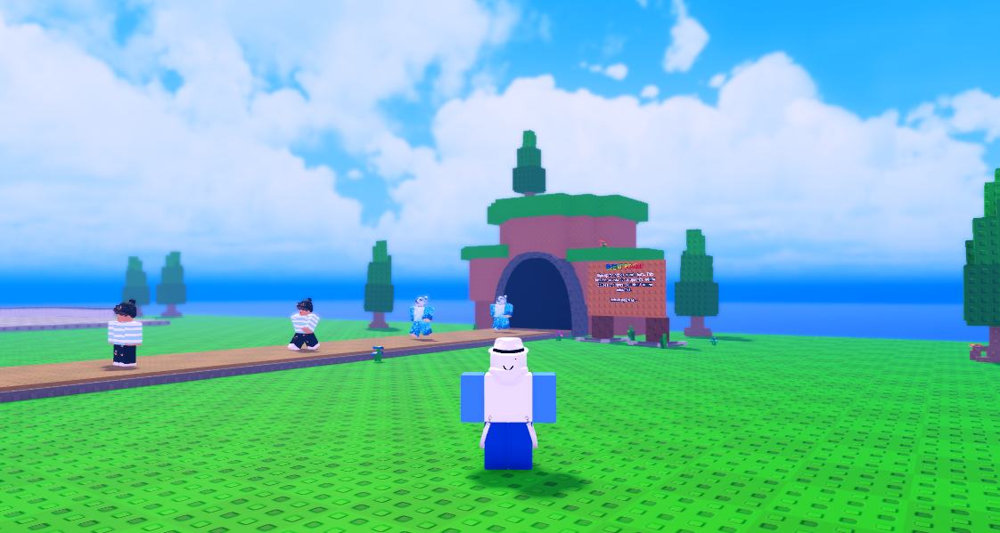

Below you can find all my own or contributed projects among Roblox and other sources.
MineHire was originally created by me. Scripts it contains, that are fully written by me; admin panel that features server/global CMDS, plot system with placeable areas, placeholder placement with camera calculations, mining mechanics, and more.

Cook For Developers was also originally created by me. Scripts it contains, that are fully written by me; admin panel that features server/global CMDS, plot system with placeable areas, placeholder placement with camera calculations, global stock like GAG, and more.
